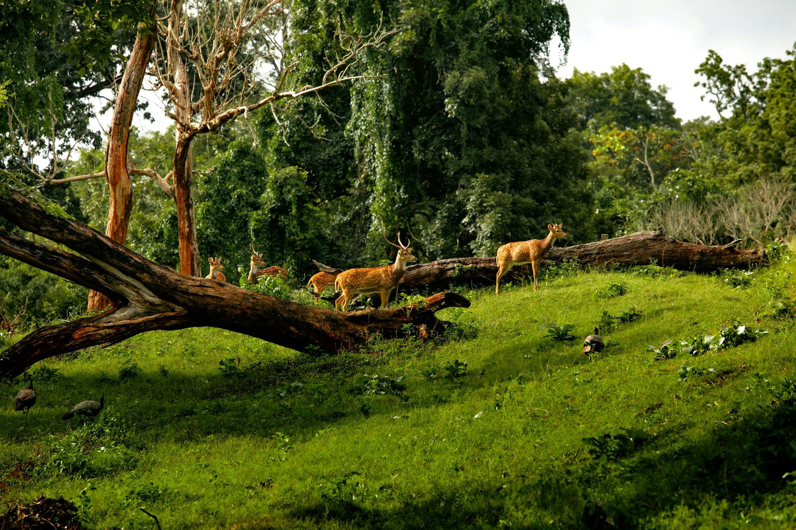
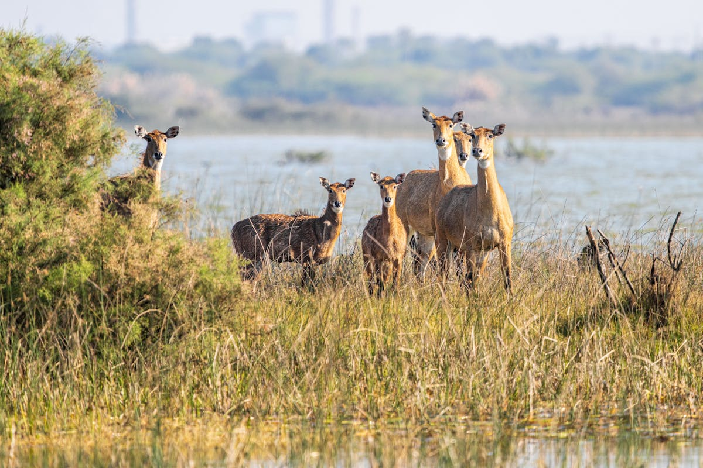
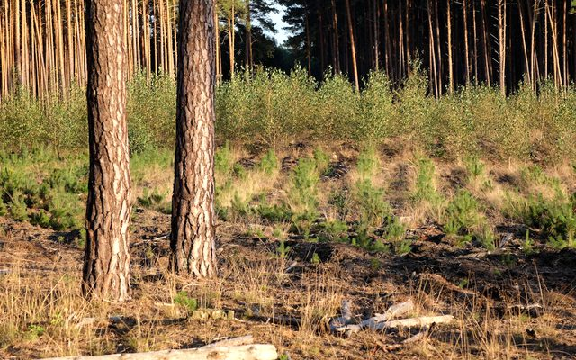
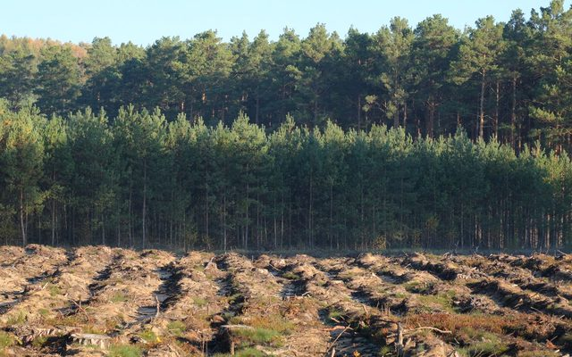
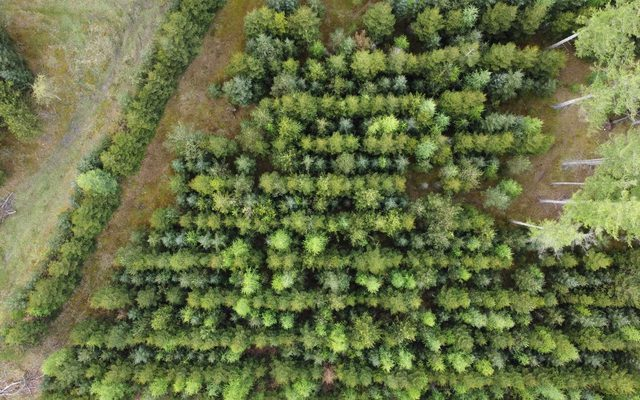
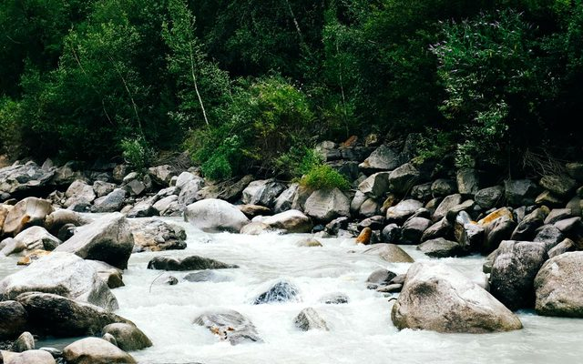
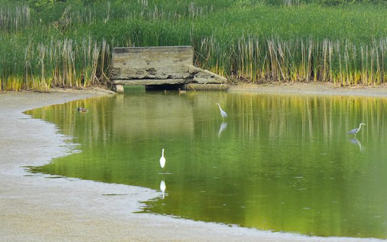
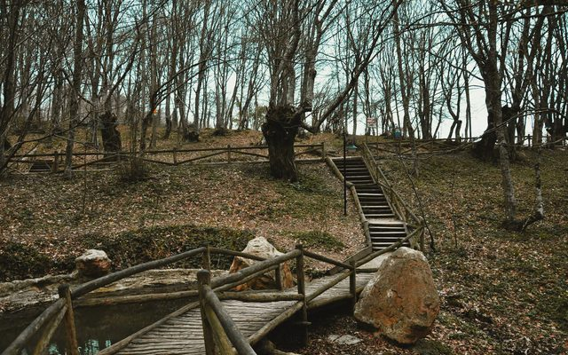

सुविकल्प: Mine Repurposing Tool
Select factors and sub-factors to discover suitable repurposing options for your mining site
![Coal Controller Organisation emblem]()


Project concept, strategic rationale, site suitability matrix and indicative scale options for rewilding and wildlife sanctuary-type development on closed coal mine land.
This concept proposes the development of Rewilding Landscapes / Wildlife Sanctuary-Type Conservation Areas / Biodiversity Recovery Reserves on closed, reclaimed or repurposed coal mine land as part of a sustainable mine-closure and post-mining land-use strategy.
The objective is to convert under-utilized mine land, overburden dumps, reclaimed benches, abandoned haul roads, subsidence areas, mine-water bodies and buffer zones into a self-sustaining ecological recovery landscape centered around:
For legal clarity, a Wildlife Sanctuary in India is a statutory protected area declared by the State Government under the Wild Life Protection Act, 1972. A mine owner can develop a wildlife sanctuary-type rewilding landscape, biodiversity reserve or conservation landscape first, while formal sanctuary / conservation reserve / community reserve notification must be pursued through the competent government authority where legally feasible.
Unlike conventional built infrastructure, rewilding landscapes can be developed progressively over reclaimed and partially restored land, require low built-up intensity and more ecological management, allow nature-led regeneration where land is safe and stable, and support long-term soil stabilization, habitat formation and ecological succession.
Rewilding and wildlife sanctuary-type landscapes are particularly suited for closed coal mine areas because mine lands often contain large contiguous land parcels, water bodies, overburden dumps, low-productivity reclaimed areas, safety buffers, plantations, grasslands and restricted-access zones that can be reorganized into a controlled conservation landscape.
A strong Indian precedent is Asola Bhatti Wildlife Sanctuary in Delhi — covering about 32 square kilometres — which includes former mining areas and abandoned mine pits that have developed into lakes and habitat zones supporting nilgai, leopard, blackbuck, porcupine, civet, jackal, jungle cat and over 193 bird species. Internationally, the Knepp Estate in the United Kingdom (more than 1,400 hectares / 3,500 acres) uses free-roaming herbivores to create dynamic vegetation mosaics, with nature tourism as part of its business model.
Key benefits include:
The following matrix provides a structured checklist for assessing the suitability of the proposed site for the selected repurposing option. It identifies the key physical, technical, environmental, infrastructure, legal, and owner-side readiness parameters that should be reviewed before the project is advanced to the next stage of development. The purpose of this matrix is to help the project owner understand existing site conditions, technical requirements, potential constraints, and preparatory actions required before feasibility studies, approvals, or tendering are initiated.
| Main Category | What to Assess / Prepare | Why it Matters | Owner-Side Readiness |
|---|---|---|---|
| Land status | Closure status, permissible post-mining land use, land ownership, encumbrances, forest status, revenue status and legal restrictions | Legal viability for rewilding / sanctuary-type development | Closure note |
| Protected-area feasibility | Whether site can be proposed as sanctuary, conservation reserve, community reserve, biodiversity heritage site or non-statutory conservation landscape | Determines legal pathway and governance model | Legal feasibility note |
| Landform stability | Slope stability, dump stability, subsidence risk, erosion zones, void edges, highwalls and unstable benches | Visitor safety, wildlife safety and long-term habitat stability | Geotechnical screening |
| Soil condition | Soil depth, texture, pH, compaction, fertility, organic carbon, salinity, acidity, heavy metals and microbial health | Determines natural regeneration potential and habitat type | Soil report |
| Contamination risk | Screening for heavy metals, acid mine drainage, hydrocarbon residues, unsafe spoil, polluted water and restricted zones | Prevents exposure to wildlife, visitors and local communities | Environmental screening |
| Habitat potential | Grassland, scrub, woodland, wetland, riparian edge, rocky habitat, meadow, thicket and open water potential | Determines rewilding zones and species support capacity | Habitat potential map |
| Water availability | Mine water, ponds, pits, wetlands, treated water, rainwater harvesting and seasonal drainage | Essential for wetlands, wildlife water points and dry-season resilience | Water plan |
| Existing vegetation | Existing plantations, natural regeneration, native grasses, shrubs, invasive species and habitat patches | Forms basis for assisted natural regeneration and habitat zoning | Vegetation inventory |
| Wildlife baseline | Birds, mammals, reptiles, amphibians, butterflies, odonates, fish, movement signs, conflict history and nesting areas | Determines conservation potential and management restrictions | Biodiversity baseline |
| Invasive species | Lantana, Prosopis, Parthenium, Chromolaena, water hyacinth or local invasive species | Invasives can suppress native habitat and increase fire risk | Invasive species plan |
| Fire risk | Dry grass, invasive thickets, human access, local burning practices and fire lines | Fire can destroy habitat and threaten villages / visitors | Fire management plan |
| Human-wildlife interface | Nearby villages, grazing, crop fields, water use, livestock, dogs and conflict history | Reduces conflict and improves community acceptance | Conflict management plan |
| Landscape connectivity | Nearby forests, rivers, wetlands, plantations, wildlife corridors, agricultural fields and village commons | Supports movement and gene flow | Connectivity map |
| Community proximity | Nearby villages, SHGs, land-losers, youth, women groups, schools, graziers and farmers | Livelihood integration and conflict prevention | Beneficiary mapping |
| Institutional linkages | Forest department, wildlife wing, biodiversity board, BSI, WII, universities, NGOs, KVKs and local panchayats | Technical credibility and long-term conservation support | Partnership note |
| Monitoring technology | GIS, drones, camera traps, acoustic sensors, eDNA, GPS patrolling, mobile apps and biodiversity dashboards | Enables evidence-based management and transparent reporting | Monitoring technology plan |
| Visitor potential | Nearby towns, schools, tourist circuits, eco-parks, transport, birding groups and nature clubs | Determines scale, revenue and facility planning | Demand assessment |
The following matrix presents an indicative relationship between available site area, project scale, technical configuration, and likely development potential. It is intended to support preliminary planning by helping the project owner identify the appropriate scale and configuration for the proposed repurposing option. The values and recommendations are indicative and should be refined through detailed feasibility studies, site surveys, engineering assessments, and relevant technical and commercial evaluations.
Scale may be benchmarked against established precedents: Asola Bhatti Wildlife Sanctuary covers about 32 sq km — showing that former mining and degraded land can become a large urban wildlife landscape. Knepp Estate covers about 3,500 acres / 1,400+ ha — showing that rewilding can work as a landscape-scale conservation and nature-tourism model.
| Land Area | Recommended Scale | Configuration | Use Case |
|---|---|---|---|
| 1–5 ha | Pilot rewilding patch / demonstration habitat | Native grassland patch, scrub cluster, small water point, bird perches, deadwood habitat, interpretation boards | Proof of concept |
| 5–20 ha | Community rewilding landscape | Native meadow, scrubland, thicket patches, small wetland, butterfly zone, bird habitat, nursery and training unit | SHG livelihood and education |
| 20–50 ha | Integrated biodiversity recovery park | Grassland, scrubland, woodland patches, wetland edge, bird hides, native nursery, compost unit, eco-trails and monitoring plots | Cluster-level ecological and livelihood asset |
| 50–100 ha | Large rewilding and eco-education park | Multi-habitat landscape, water-body integration, conservation nursery, visitor centre, controlled trails, watch towers, interpretation centre | PPP / CSR model |
| 100–500 ha | Mine rewilding reserve / conservation landscape | Large grassland-scrub-woodland mosaic, wetland habitats, restricted wildlife zones, patrolling routes, research plots and community buffer areas | Just-transition flagship |
| 500 ha+ | Wildlife sanctuary-type landscape / formal protected-area candidate where legally feasible | Multi-zone conservation landscape: core habitat, buffer habitat, eco-tourism zone, restoration zone, research zone, community stewardship zone | Long-term statutory or semi-statutory conservation landscape |
Implementation models for structuring a rewilding / wildlife sanctuary project — from owner-led EPC to community concessions, PPP, and hybrid ecology-livelihood approaches.
The following table outlines the possible implementation models that may be considered for developing the proposed repurposing project. These models differ in terms of ownership structure, funding responsibility, private sector participation, operational control, and long-term risk allocation. The purpose of this table is to help the project owner compare broad development routes and select an implementation approach that aligns with its financial capacity, institutional preference, risk appetite, and long-term asset management objectives.
| Model | Suitability | Comment |
|---|---|---|
| EPC | Moderate | Suitable for basic earthworks, fencing, water-body safety, habitat creation, native planting, trails and interpretation infrastructure |
| EPC + O&M / Facility Management | High | Strong for owner-controlled rewilding with habitat maintenance, monitoring, patrolling, fire management and community livelihood support |
| BOOT | Moderate | Suitable for visitor facilities, nature trails, interpretation centres and eco-tourism assets with eventual transfer |
| BOO | Low to Moderate | Suitable only for limited eco-tourism or native nursery enterprise; less suitable where conservation control and public accountability are critical |
| DBFOT | High | Suitable for large rewilding landscapes with visitor facilities, monitoring technology, wetland systems, nurseries and eco-tourism |
| Concession / Lease-Develop-Operate | High | Strong for long-term operation with conservation targets, community livelihood obligations and revenue sharing |
| Hybrid | Very High | Most flexible and balanced for ecological restoration, public education, local livelihood, scientific monitoring and revenue objectives |
The following comparative assessment evaluates the major implementation models across key decision parameters such as investment requirement, ownership control, financing responsibility, contractual complexity, risk transfer, and long-term economic benefit. This matrix is intended to support early-stage decision-making by highlighting the relative strengths and limitations of each model. The final choice of model should be guided by the specific circumstances of the project, including its scale, commercial viability, applicable policy framework, and the owner's institutional preference.
| Evaluation Parameter | EPC | EPC + O&M | BOOT | BOO | DBFOT | Concession / LDO | Hybrid |
|---|---|---|---|---|---|---|---|
| Upfront investment by Mine Owner | High | High to Moderate | Low to Moderate | Low | Low to Moderate | Low to Moderate | Variable |
| Suitability for ecological restoration | Moderate | High | High | Moderate | High | High | Very High |
| Suitability for rewilding | Low to Moderate | High | Moderate | Low to Moderate | High | High | Very High |
| Suitability for wildlife sanctuary-type landscape | Moderate | High | Moderate | Low | High | High | Very High |
| Suitability for community participation | Moderate | High | Moderate to High | Low to Moderate | High if mandated | Very High | Very High |
| Suitability for SHG / FPO integration | Moderate | High | Moderate | Low to Moderate | High if required | Very High | Very High |
| Suitability for long-term habitat maintenance | Low to Moderate | High | High | Moderate to High | High | Very High | Very High |
| Suitability for biodiversity monitoring | Low to Moderate | High | Moderate | Moderate | High | High | Very High |
| Suitability for local livelihood | Moderate | Very High | High | Moderate | High to Very High | Very High | Very High |
| Revenue potential | Low to Moderate | Moderate | Moderate to High | High | High | Moderate to High | Variable to High |
| Suitability for phased development | Moderate | High | Moderate | Moderate | High | Very High | Very High |
| Public accountability | High | High | Moderate | Low | Moderate to High | Moderate to High | Very High |
| Overall suitability for Rewilding / Wildlife Sanctuary | Moderate | High | Moderate | Low to Moderate | High | High to Very High | Very High / Most Suitable |
The following table explains how major project responsibilities are typically allocated under different implementation models. It covers key functional areas such as site availability, financing, design and construction, regulatory approvals, operation and maintenance, revenue collection, asset ownership, and end-of-term transfer. This helps clarify the respective roles of the project owner, private developer, EPC contractor, operator, or concessionaire, and supports the preparation of tender documents and contractual structures.
| Responsibility Area | EPC | EPC + O&M | BOOT | BOO | DBFOT | Concession / LDO | Hybrid |
|---|---|---|---|---|---|---|---|
| Site / land availability | Mine Owner | Mine Owner | Mine Owner / authority | Mine Owner / developer | Mine Owner / authority | Mine Owner / authority | Mine Owner / shared |
| Mine closure linkage | Mine Owner | Mine Owner | Mine Owner + developer | Mine Owner / developer | Mine Owner + concessionaire | Mine Owner + concessionaire | Mine Owner + partners |
| Protected-area legal pathway | Mine Owner / govt authority | Mine Owner / govt authority | Mine Owner / authority | Mine Owner / authority | Mine Owner / authority | Mine Owner / authority | Mine Owner + govt authority |
| Wildlife baseline & habitat zoning | Mine Owner / consultant | O&M agency / wildlife partner | Developer / expert | Developer | Concessionaire | Concessionaire / expert agency | Shared |
| Nursery establishment | EPC contractor | EPC contractor / O&M agency | Developer | Developer | Concessionaire | Concessionaire / operator | Shared |
| Grassland, scrub & woodland restoration | EPC contractor | EPC / O&M agency | Developer | Developer | Concessionaire | Concessionaire / operator | Shared with local groups |
| Wetland & water-body habitat | EPC contractor | EPC / O&M agency | Developer | Developer | Concessionaire | Concessionaire / operator | Shared |
| Patrolling & fire management | Mine Owner | O&M agency | Developer | Developer | Concessionaire | Concessionaire / operator | Owner + community watchers |
| Visitor trails & interpretation centre | EPC / owner | Owner / O&M agency | Developer | Developer | Concessionaire | Concessionaire / operator | Owner + operator / NGO |
| Camera traps / monitoring tech | Mine Owner / consultant | O&M agency / expert partner | Developer | Developer | Concessionaire | Concessionaire | Shared |
| Community mobilization & SHG/FPO | Mine Owner-controlled | Mine Owner + O&M agency | Developer if mandated | Developer if mandated | Concessionaire if mandated | Concessionaire + NGO / FPO | NGO / SHG / FPO + owner |
| Local employment & training | Mine Owner-controlled | Mine Owner through contract | Contract-based | Developer policy | Contract-based | Strongly contract-based | Strongly configurable |
| Revenue collection & sharing | Mine Owner (receives all) | Mine Owner after agency payments | Concession fee / revenue share | Lease / fixed charges | Concession fee / revenue share | Lease rent / concession fee / share | As structured |
| Asset transfer at end | No | No | Yes | No | Yes | As agreed | As agreed |
Funding logic and revenue generation pathways for rewilding and wildlife sanctuary projects — from CSR-funded owner-led models to community concessions and hybrid ecology-tourism structures.
The following table presents the broad funding logic for each implementation model. It explains who is expected to finance the project, the level of owner-side funding requirement, and the commercial rationale behind each structure. This section is intended to help the project owner assess whether the project is more suitable for owner-funded development, private investment, public-private partnership, lease or concession structure, or a hybrid funding arrangement.
| Model | Funding Source | Owner Funding Requirement | Suitability for Rewilding / Wildlife Sanctuary |
|---|---|---|---|
| EPC | Mine owner budget / mine closure fund / CSR | High | Suitable for basic rewilding infrastructure, fencing, habitat creation, water points, trails, signage and safety works |
| EPC + O&M / FM | Mine owner budget + O&M budget + CSR | High to Moderate | Strong fit where owner wants control over habitat recovery, wildlife monitoring, safety, community participation and education |
| BOOT | Private developer capital + possible CSR / VGF / grant support | Low to Moderate | Suitable for rewilding landscape with visitor centre, nature trails, eco-tourism facilities, interpretation centre and eventual asset transfer |
| BOO | Private developer capital | Low | Suitable only for commercially driven eco-tourism, native nursery or nature-based enterprise; less preferred where conservation and public control are important |
| DBFOT | Private concessionaire + public / CSR support + possible VGF | Low to Moderate | Suitable for large rewilding parks with interpretation centres, wetland systems, visitor facilities, conservation nurseries and monitoring technology |
| Concession / Lease-Develop-Operate | Private operator / FPO / SHG federation / NGO / CSR / blended finance | Low to Moderate | Very suitable for community-linked rewilding landscapes with livelihood obligations, controlled visitor revenue and revenue sharing |
| Hybrid | Mine owner + CSR + government schemes + private operator + SHG/FPO + NGO + grants | Variable | Most suitable for balancing ecological restoration, wildlife conservation, public education, livelihood generation and owner revenue participation |
The following table explains how revenue may be generated under different implementation models and identifies who is likely to receive the principal project income. It also describes the nature and extent of the financial benefit available to the project owner, whether through direct project revenue, cost savings, lease income, concession fees, revenue sharing, service charges, or eventual asset transfer. This comparison is intended to support the selection of a commercially appropriate model for the proposed repurposing project.
| Model | How Revenue is Generated | Who Receives Main Revenue | Owner's Financial Benefit |
|---|---|---|---|
| EPC | Entry tickets, guided nature trails, birdwatching, nature camps, training fees, exhibitions, interpretation centre income, native plant sales and eco-tourism visits | Mine Owner | Full revenue retained by owner, but owner bears full CAPEX, O&M, habitat maintenance, visitor safety and market risk |
| EPC + O&M / FM | Same revenue streams: tickets, guided trails, nature camps, training, eco-tourism, exhibitions, school programmes, native nursery sales and events | Mine Owner after paying O&M agency | High benefit; owner retains revenue while outsourcing operations, ecological maintenance and technical management |
| BOOT | Developer earns from ticketing, visitor facilities, guided trails, eco-tourism, camping where permitted, cafeteria, training, interpretation facilities and nature events during concession | Developer / concessionaire during concession | Lease rent, concession fee, revenue share, local economic uplift and asset transfer at end of concession |
| BOO | Long-term revenue from eco-tourism, guided trails, native nursery, events, visitor amenities, training services and nature education | Private developer | Limited direct benefit; typically lease rent, fixed charges or premium payments |
| DBFOT | Structured revenue from ticketing, interpretation centre, eco-tourism, nature education, visitor amenities, conservation nursery, events and CSR-supported programmes | Concessionaire during concession | Concession fee, lease rent, revenue share, performance-linked payments and asset transfer at end |
| Concession / LDO | Revenue from conservation landscape operations, guided trails, visitor services, native nursery sales, SHG/FPO enterprises, training and eco-tourism | Concessionaire / operator as per agreement | Lease rentals, revenue share, improved land value, ESG gains and indirect socio-economic benefits |
| Hybrid | Mixed revenue: tickets, guided trails, SHG/FPO enterprises, CSR/grants, eco-tourism, training, events, interpretation centre, nursery sales and biodiversity services | Shared between owner, operator, SHG/FPO, NGO as structured | Variable to high; owner benefits through revenue share, reduced O&M burden, ESG gains and enhanced land value |
The following table assesses the likely local livelihood and employment potential of each implementation model. It considers the extent to which each model can support construction-phase jobs, long-term operational employment, local procurement opportunities, skill development, community participation, and associated support services. This section is particularly relevant where the repurposing project is expected to contribute to post-mining or post-operational economic transition and sustained local community benefit.
| Model | Local Job Potential | Why | Overall Suggestibility |
|---|---|---|---|
| EPC | High | Generates local employment during construction, fencing, restoration works, habitat creation, trail development, and infrastructure installation. Ranger and monitoring roles depend on owner's operational approach. | High |
| EPC + O&M | Very High | Supports sustained long-term employment in wildlife monitoring, habitat maintenance, eco-tourism operations, ranger services, education programmes, and community outreach. Owner can mandate local hiring. | Very High / Most Suitable |
| BOOT | High | Generates construction-phase and operational employment over the concession period. Local hiring, guide training, SHG enterprise, and community participation can be built into the concession agreement. | High — contractually mandatable |
| BOO | Moderate to High | Creates construction and long-term operational employment. Local benefit depends on the private operator's policies and any contractual community obligations in the development agreement. | Moderate to High |
| DBFOT | High to Very High | Large-scale construction and sustained operational employment through eco-tourism, wildlife monitoring, conservation management, and visitor services. Local employment obligations can be embedded in concession conditions. | Very High |
| Concession / Lease-Operate-Develop | High to Very High | Supports direct and indirect employment through eco-tourism operations, wildlife guiding, hospitality, conservation management, and local enterprise participation. Outcomes depend on concession terms. | Very High |
| Hybrid | Very High | Strongest model for integrating conservation outcomes with community benefit. Enables explicit provisions for local guides, SHGs, ex-mine workers, tribal communities, conservation staff, and skill-development programmes. | Very High / Most Suitable |
The following combined comparison brings together three important dimensions of project structuring: revenue potential, owner-side financial benefit, and local livelihood generation. It provides a consolidated view of how each implementation model performs across commercial, institutional, and community-development perspectives. This matrix is intended to support balanced decision-making where the objective extends beyond financial return to include sustainable site reuse and long-term local economic benefit.
The following table assesses the likely local livelihood and employment potential of each implementation model. It considers the extent to which each model can support construction-phase jobs, long-term operational employment, local procurement opportunities, skill development, community participation, and associated support services. This section is particularly relevant where the repurposing project is expected to contribute to post-mining or post-operational economic transition and sustained local community benefit.
| Model | Main Revenue Source | Owner Profitability | Local Job Creation | Overall Comment |
|---|---|---|---|---|
| EPC | Entry tickets, guided trails, nature camps, training fees, birding, eco-tourism and events | Moderate to High — but owner bears full CAPEX, O&M, habitat maintenance, visitor safety and market risk | Moderate | Useful for initial landscape setup, but weak for long-term livelihood unless followed by structured O&M |
| EPC + O&M / FM | Tickets, guided trails, training, nature camps, visitor facilities, eco-tourism, native nursery and school programmes | High — owner retains revenue after O&M payments | High to Very High | Strong where owner wants control, welfare impact, conservation performance and sustained employment |
| BOOT | Visitor facilities, ticketing, guided trails, nature camps, nursery, events, training and eco-tourism | Moderate — through concession fee, lease rent, revenue share and eventual asset transfer | High | Suitable for rewilding landscape with commercial visitor facilities and mandatory livelihood clauses |
| BOO | Long-term private revenue from eco-tourism, events, nature education, nursery and visitor amenities | Low to Moderate — mostly from lease rent, fixed charges or premium | Moderate | Use cautiously where community benefit, conservation control and public accountability are not primary |
| DBFOT | Rewilding value chain, ticketing, interpretation centre, eco-tourism, monitoring services, events and training centre | Moderate to High — through concession fee, lease rent, revenue share and transfer terms | High to Very High | Good for large structured PPP projects needing private finance and professional operation |
| Concession / LDO | Conservation landscape operations, guided trails, SHG/FPO production, eco-tourism, training and visitor services | Moderate to High — through lease rent, concession fee, revenue share and improved land value | Very High | Very suitable for community-linked rewilding landscape with livelihood obligations |
| Hybrid | Mixed revenue: ticketing, guided trails, SHG/FPO enterprises, CSR support, grants, eco-tourism, training and events | Variable to High depending on revenue-sharing structure | Very High | Most suitable for balancing mine-closure, livelihood, ecological restoration, education and commercial objectives |
Comparative assessment of implementation models, model-wise responsibility logic, and combined revenue-profitability-livelihood analysis for rewilding and wildlife sanctuary projects.
The following section identifies the key owner-side preparatory actions that should ideally be completed before issuing the first Request for Proposal. These actions are aimed at reducing uncertainty for prospective bidders, improving project bankability, clarifying site availability, identifying approval pathways and risks, and defining the technical and commercial scope of the project. Completing these preparatory steps before tendering can improve bid quality, attract credible responses, and reduce the risk of delays during project implementation.
Before issuing an RFP for a rewilding / wildlife sanctuary-type mine repurposing project, the mine owner should prepare the following:
The following section lists the principal activities that may be undertaken by the selected contractor, developer, concessionaire, operator, or implementation agency after award of the project. These activities generally include detailed site investigations, engineering design, statutory submissions and approvals, equipment procurement, construction, commissioning, operational planning, staff training, and performance monitoring. The distinction between pre-RFP owner preparedness and post-award implementation responsibilities helps ensure an appropriate and efficient allocation of effort across the project development cycle.
After award, the selected concessionaire / contractor / O&M agency / conservation partner may take up the following in chronological order:
The following implementation pathway presents a practical high-level sequence for advancing the proposed repurposing concept from initial approval through to project execution and long-term operation. It outlines the broad stages of concept approval, preliminary studies, model selection, bid preparation, procurement, detailed design, statutory approvals, construction, commissioning, and ongoing operation. This pathway is indicative and should be adapted to reflect the specific complexity, regulatory requirements, financing structure, and site conditions applicable to the project.
Pre-RFP owner readiness checklist, post-award activities, 26-step implementation pathway, and preferred models for rewilding and wildlife sanctuary development on closed coal mine land.
The following way forward summarizes the preferred development approach for the proposed repurposing option, based on the assessment presented in PRISM (Post Mining Repurposing Implementation and Strategy Models). It identifies the most suitable implementation models in order of preference, highlights key technical and due-diligence considerations, and outlines the recommended next steps and broad development logic. This section is intended to guide internal decision-making and support the project owner in progressing from concept-stage evaluation toward feasibility assessment, project structuring, regulatory approvals, and implementation planning.
Secondary option: EPC + O&M is suitable for owner-controlled rewilding landscapes where public access, habitat quality and monitoring must remain tightly controlled.
Technical priorities: Habitat suitability, native vegetation, water sources, fire control, invasive species, human-wildlife conflict, legal status, fencing, visitor regulation and biodiversity monitoring must be assessed before procurement.
Recommended development logic: Start with habitat restoration, native planting, water-body improvement and controlled access. Introduce eco-tourism only after biodiversity recovery, safety and visitor regulation systems are in place.
| Abbreviation | Full Form |
|---|---|
| BOO | Build, Own, Operate |
| BOOT | Build, Own, Operate, Transfer |
| CAPEX | Capital Expenditure |
| CBD | Convention on Biological Diversity |
| CSR | Corporate Social Responsibility |
| DBFOT | Design, Build, Finance, Operate, Transfer |
| DMF | District Mineral Foundation |
| DPR | Detailed Project Report |
| EPC | Engineering, Procurement and Construction |
| ESG | Environmental, Social and Governance |
| IUCN | International Union for Conservation of Nature |
| MoEFCC | Ministry of Environment, Forest and Climate Change |
| NTCA | National Tiger Conservation Authority |
| O&M | Operation and Maintenance |
| PPP | Public-Private Partnership |
| RFP | Request for Proposal |
| SHG | Self-Help Group |
| WII | Wildlife Institute of India |
| VGF | Viability Gap Funding |






Links open external websites. Coal Controller Organisation does not endorse third-party content.
.png)


Disclaimer: Inclusion of an agency on this list does not constitute endorsement, empanelment, or recommendation by the Coal Controller Organisation or the Ministry of Coal, Government of India. Mine owners and project proponents are advised to conduct their own due diligence process before engaging any agency.
Expert in landscape ecology, biodiversity planning, and wildlife conservation at WWF India, with extensive experience in habitat assessment and conservation planning for protected areas and mine-adjacent landscapes.
Specialist in rhino conservation and wildlife habitat restoration at WWF India, with field experience in Assam and expertise in large mammal conservation, habitat management, and community engagement.
Disclaimer: Inclusion of an expert does not constitute endorsement, empanelment, or recommendation by the Coal Controller Organisation or the Ministry of Coal, Government of India. Users are advised to independently verify credentials and suitability before engaging any individual.